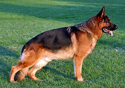

<doctype html>
<html>
<head>
	<title>Razas de perros</title>
</head>
<body>
	<center>
	<table border="0" width="80%" height="600">
		<tr height="200">
			<td bgcolor="lightblue">
				<center>
				<h1>razas de perros</h1>
				</center>
			</td>
			<td width="40">
			</td>
			<td rowspan="2">
				
				<h2>Pastor Aleman</h2>
					<h3>descripción</h3>
						es una raza canina que proviene de Alemania.
						​La raza es relativamente nueva, ya que su origen
						se remonta a 1899.Forman parte del grupo de pastoreo<br/><br/>
						
					
				<h2>enlace a compañeros</h2>
				<ol>
					<li><a href="https://cantabria-infinita.000webhostapp.com/html.html">Ivan</a><li>
					<li><a href="https://smart-congress.000webhostapp.cpm/PaginaHTML.html">Fran</a><li>
					<li><a href="https://cockiest-tuesdays.000webhostapp.com/html5.html">Jauri</a><li>
					</ol>
					
				</ol>
				<h2>Mas información </h2>
				<form>
					<input type="email"/>
					<button>Enviar</button>
				</form>
				<br/><br/>
			</td>
		</tr>
		<tr>
			<td background="razas.jpg" valign="top">
				<br/><br/>
				<font color="white">
				<ul>
					<li><a href="new 1.html"><font color="blue">American Standford</font></a></li>
					<li><a href="new 2.html"><font color="blue">Pastor Aleman</font></a></li>
					<li><a href="new 3.html"><font color="blue">Border collie</font></a></li>
				</ul>
				</font>
			</td>
		</tr>
	</table>
	</center>
</body>
</html>
					
					